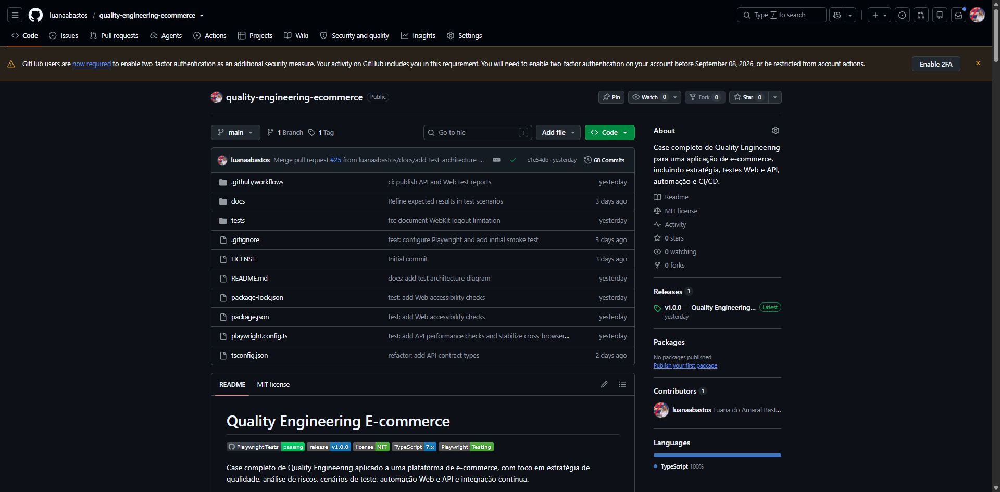
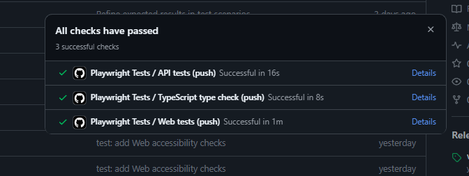
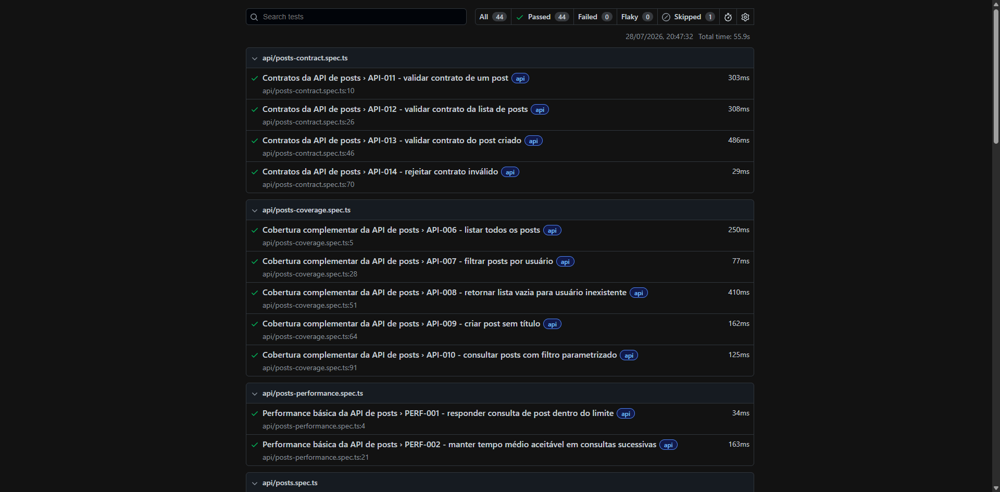

Quality Assurance • Test Automation • Quality Engineering
Luana do Amaral Bastos Senior Software Test Engineer
Atuo na qualidade de software de ponta a ponta, combinando estratégia de testes, automação e colaboração com Produto e Desenvolvimento para prevenir falhas e elevar a confiabilidade das entregas.
Sobre mim
Qualidade de software além da execução de testes
Sou profissional de Quality Assurance com experiência na garantia da qualidade de software durante todo o ciclo de desenvolvimento, desde a análise de requisitos até a validação final das entregas.
Atuo com planejamento e estratégia de testes, análise de riscos, testes funcionais, regressivos e exploratórios, automação Web, mobile e API, gestão de defeitos e melhoria contínua dos processos de qualidade.
Minha experiência anterior em desenvolvimento de software fortalece minha colaboração técnica com Produto e Engenharia, permitindo analisar soluções de forma mais ampla e contribuir para a prevenção de falhas desde as primeiras etapas do desenvolvimento.
Diferenciais profissionais
Como gero impacto em qualidade
Minha atuação combina visão de negócio, estratégia de testes, liderança técnica e colaboração com diferentes áreas para antecipar riscos e aumentar a confiabilidade das entregas.
Estratégia baseada em riscos
Priorização dos testes considerando criticidade, impacto para o negócio, probabilidade de falha e histórico do produto.
Qualidade desde o refinamento
Participação antecipada na análise de requisitos, regras de negócio e critérios de aceitação para reduzir ambiguidades e retrabalho.
Liderança técnica
Organização das demandas de QA, revisão de automações, apoio técnico e contribuição para a evolução dos profissionais da área.
Prevenção de defeitos
Atuação voltada à identificação de riscos antes da implementação, reduzindo falhas tardias e aumentando a previsibilidade das entregas.
Qualidade contínua
Integração de automações ao pipeline, acompanhamento de evidências, execução cross-browser e monitoramento da estabilidade da suíte.
Colaboração entre áreas
Comunicação de riscos e apoio à tomada de decisão em parceria com Produto, Desenvolvimento e demais envolvidos no ciclo de entrega.
Especialidades
Atuação técnica e estratégica em Quality Engineering
Estratégia de qualidade
Planejamento de testes, análise de riscos, definição de critérios de aceitação, testes exploratórios e acompanhamento da qualidade durante todo o ciclo de desenvolvimento.
Automação Web e API
Criação e manutenção de automações com Playwright, Cypress, Selenium, TypeScript e JavaScript, além de validações de APIs e contratos.
Mobile Testing
Estratégia e execução de testes mobile com Appium, Katalon e Maestro, considerando diferentes dispositivos, ambientes e riscos de negócio.
Qualidade contínua
Integração contínua, pipelines de testes, acessibilidade, execução cross-browser, relatórios de qualidade e prevenção de regressões.
Experiência
Evolução profissional em qualidade e engenharia de software
2024 — Atual
Geopixel
Senior Software Test Engineer
- Liderança da área de Quality Assurance, organizando prioridades, distribuindo demandas e acompanhando riscos e qualidade das entregas.
- Definição da estratégia de testes com base em requisitos, criticidade, impacto para o negócio e critérios de aceitação.
- Atuação antecipada em refinamentos e planejamento, identificando ambiguidades, dependências e riscos antes do desenvolvimento.
- Planejamento e acompanhamento de testes funcionais, regressivos, exploratórios, Web, mobile e API em diferentes produtos e times.
- Revisão técnica e code review das automações, promovendo padronização, manutenibilidade e evolução contínua da suíte de testes.
- Mentoria e apoio técnico a profissionais da área, contribuindo para autonomia, compartilhamento de conhecimento e evolução do time.
- Acompanhamento de indicadores, evidências, defeitos e relatórios para apoiar decisões de liberação, bloqueio e priorização das entregas.
- Atuação em times dinâmicos e multidisciplinares, colaborando com Produto, Desenvolvimento e demais áreas durante todo o ciclo de entrega.
- Experiência também como Scrum Master, facilitando cerimônias, removendo impedimentos e apoiando a organização e melhoria contínua do time.
2023 — 2024
Geopixel
Software Test Engineer Pleno
- Planejamento e execução de testes funcionais, regressivos, exploratórios e de homologação.
- Automação Web com Cypress e JavaScript.
- Criação de planos, cenários e casos de teste.
- Registro, análise e acompanhamento de defeitos pelo Jira.
- Colaboração com Produto e Desenvolvimento em cerimônias e refinamentos.
2023
Geopixel
Quality Assurance Analyst
- Estruturação dos processos e práticas da área de qualidade.
- Análise de requisitos e regras de negócio.
- Criação e execução de testes funcionais e exploratórios.
- Documentação de evidências e cenários em Gherkin.
2022 — 2023
MOVA | Credit as a Service
Back-end Software Engineer | PHP e APIs
- Desenvolvimento e manutenção de aplicações back-end com PHP.
- Implementação e evolução de APIs e microsserviços.
- Consultas e validações em banco de dados.
- Testes automatizados com PHPUnit, Docker, GitLab e Google Cloud Platform.
2021 — 2022
Global Financeiro
Estagiária de Quality Assurance
- Execução de testes funcionais em plataforma financeira.
- Identificação, documentação e acompanhamento de defeitos.
- Criação de evidências e execução de testes de regressão.
- Utilização de Postman e GitLab no processo de qualidade.
Case principal
Quality Engineering E-commerce
Case completo de Quality Engineering para uma aplicação de e-commerce, envolvendo estratégia de testes, automação Web e API, acessibilidade, contratos, performance e integração contínua.
Contexto e desafio
Construir uma estratégia de qualidade que cobrisse fluxos críticos de e-commerce e permanecesse organizada, sustentável e executável em diferentes navegadores.
Decisões técnicas
Playwright, TypeScript, Page Object Model, fixtures, separação entre testes Web e API e contratos de dados com Zod.
Cobertura
Autenticação, cadastro, carrinho, checkout, logout, operações de API, acessibilidade, performance e execução cross-browser.
CI/CD
Pipeline no GitHub Actions com jobs independentes para TypeScript type check, testes de API e testes Web.

Release v1.0.0
Primeira versão estável do projeto, com documentação, evidências e pipeline publicados.

Pipeline CI/CD
Type check, testes de API e testes Web executados em jobs independentes.

Relatório de execução
Evidência dos resultados da suíte automatizada e dos navegadores utilizados.
Tecnologias
Ferramentas aplicadas conforme o contexto de qualidade
Automação
Playwright
Cypress
Selenium
Appium
Katalon
Maestro
Linguagens
TypeScript
JavaScript
PHP
SQL
API e dados
Postman
REST APIs
Zod
MySQL
CI/CD e infraestrutura
GitHub Actions
Azure DevOps
Git
GitLab
Docker
Gestão e processos
Jira
Scrum
Kanban
Test Strategy
Defect Management
Formação
Base acadêmica e desenvolvimento contínuo
Bacharelado em Matemática
Universidade Federal de Itajubá — UNIFEI
2018 — 2023Tecnologia em Análise e Desenvolvimento de Sistemas
UniCesumar
2026 — 2029Quality Assurance, automação e engenharia de software
Cursos e certificações em Cypress, Selenium, APIs, Postman, Playwright, desenvolvimento e metodologias ágeis.
Ver certificações no LinkedIn